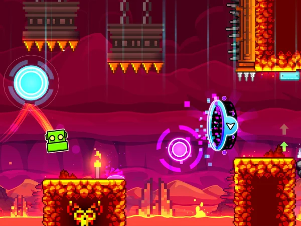

Geometry Dash APK Download – Latest Versions Free
Experience intense rhythm-based action with Geometry Dash 2.2 APK. Play offline, unlock all levels, and enjoy endless challenges created by the community.

Game Information
The Full Version Experience
The Geometry Dash full version APK unlocks everything the game has to offer.
All Levels Unlocked
Jump straight into any of the 21 official levels, including the challenging demon levels, without needing to unlock them first.
Custom Soundtracks
Use your own music in the level editor and play community levels with custom songs from Newgrounds.
Full Level Editor
Unleash your creativity with unrestricted access to the powerful level editor. Build, share, and play millions of user-created levels.
Complete Offline Mode
Play the full game, including all official levels, anytime and anywhere, without needing an internet connection.
No Ads Experience
Enjoy uninterrupted gameplay. The full version APK is completely free of the advertisements found in the Lite version.
Infinite Lives (Mod)
Practice and master the hardest sections with the modded APK variant that gives you unlimited attempts.
How to Install Geometry Dash APK (Step-by-Step)
Installing the Geometry Dash 2.2 APK is simple and unlocks the full game on your device. Our detailed, step-by-step guides make it easy whether you're on Android, PC, or iOS. Follow these instructions to securely download and set up the game in minutes.
Android
How to Install on Android (APK Method)
The most popular method to get the full version of Geometry Dash for free. This process, known as "sideloading," is simple and safe if you follow these steps.
Enable "Unknown Sources":
Go to your device's Settings > Security. Find the "Install unknown apps" option and grant permission to your web browser (like Chrome) or file manager.
Download the APK File:
Tap the download button on our site to get the latest Geometry Dash 2.2 APK. Our files are scanned and 100% safe.
Install the Game:
Open your file manager, locate the downloaded APK, and tap on it. Confirm the installation, and the game will be ready on your device in moments.
Safety Tip: Only download APKs from trusted websites like ours. Avoid suspicious links to protect your device from malware.
PC
How to Install on PC (via Emulator)
Experience Geometry Dash on a bigger screen with better controls by playing the mobile version on your Windows or Mac computer.
Install an Android Emulator:
Download a reputable emulator like BlueStacks or LDPlayer. These programs create a virtual Android device on your PC.
Download the APK:
From within the emulator's browser, navigate to our site and download the Geometry Dash APK file.
Load the APK:
Most emulators have an "Install APK" button. Click it, select the file you downloaded, and the emulator will install the game automatically.
Performance Tip: In your emulator's settings, allocate more RAM and CPU cores to ensure the game runs smoothly without lag.
iOS
How to Install on iOS (via AltStore)
This advanced method uses AltStore to sideload the .ipa file (the iOS equivalent of an APK) onto your iPhone or iPad without jailbreaking.
Set up AltServer on Computer:
- Download AltServer from altstore.io.
- On Windows, install iCloud directly from Apple's website.
- Run AltServer and connect your iPhone/iPad via USB.
- Enable Wi-Fi sync in iTunes (Windows) or Finder (macOS).
Install AltStore on iOS Device:
- From the AltServer menu on your PC, select "Install AltStore" > your device.
- Enter your Apple ID when prompted.
- On your iPhone, go to Settings > General > VPN & Device Management and "Trust" your Apple ID.
Sideload the Geometry Dash IPA:
- Download the Geometry Dash .ipa file to your iPhone's Files app.
- Open the .ipa file, tap the "Share" icon, and select "AltStore".
- AltStore will open and install the game.
Tip: Refresh apps in AltStore weekly while on the same Wi-Fi as your computer to keep them working.
Play on Any Device
Whether you want to play Geometry Dash on PC, Android, or iOS, we have you covered. Our detailed guides show you how to get the game running on your Windows PC, Mac, or mobile phone. Find the right installation method for your device and start playing in minutes.
Android
Android 5.0+
- Play Geometry Dash anywhere, anytime
- Smooth touch controls for precise jumps
- Offline mode for non-stop fun
- Optimized for both smartphones & tablets
PC
Windows / macOS
- Enjoy Geometry Dash on big screens
- Keyboard shortcuts for pro-level gameplay
- High FPS support for smooth action
- Works with both laptops & desktops
iOS
iPhone / iPad
- Official & verified by Apple
- 100% safe and secure download
- Supports the game developers
- Get automatic game updates
Geometry Dash Lite vs. Full Version
Can't decide between the free Lite version and the full game? This detailed comparison table breaks down every key difference to help you choose.
| Feature | Lite Version | Full APK Version |
|---|---|---|
| All 21 Official Levels | ✗ | ✓ |
| Level Editor Access | ✗ | ✓ |
| User-Created Online Levels | ✗ | ✓ |
| Ad-Free Gameplay | ✗ | ✓ |
| All Unlockable Icons | ✗ | ✓ |
| Custom Music from Newgrounds | ✗ | ✓ |
| Practice Mode for Levels | ✓ | ✓ |
| Full Offline Access | ✓ | ✓ |
| Mod & Hack Version Support | ✗ | ✓ |
Geometry Dash Gameplay Modes & Levels
Dive deep into the core of Geometry Dash! From the official levels that test your timing to the endless universe of user-created challenges, there's always a new rhythm to conquer. Let's explore the gameplay modes and levels that make the Geometry Dash APK a legendary experience.
The 21 Official Levels: Your Ultimate Test
These are the handcrafted levels by RobTop that form the heart of the game. Each one introduces new mechanics, challenges, and some of the most iconic music in mobile gaming. Beating all 21 is a true badge of honor!
User-Created Levels: Endless Fun
The real magic of Geometry Dash lies in its community. The Level Editor empowers players to design and share their own creations, resulting in millions of unique, challenging, and often breathtaking levels.
- Limitless Content: With thousands of new levels uploaded daily, you'll never run out of challenges to play.
- Creative Designs: Explore everything from artistic masterpieces to brutally difficult "demon" levels that push the game to its limits.
- Rating System: Levels are rated by difficulty (from Easy to Demon) and feature ratings from other players, helping you find quality content.
Practice Mode: Master the Rhythm
Stuck on a particularly tricky part? Practice Mode is your best friend. This essential Geometry Dash mode lets you perfect your skills without the frustration of starting over from the beginning.
- Set Checkpoints: Place automatic or manual checkpoints (green diamonds) to respawn exactly where you need to practice.
- Isolate Sections: Focus on mastering that one impossible jump or tight ship sequence until it becomes muscle memory.
- No-Stress Learning: Since deaths don't count, you can experiment freely and build confidence before taking on the real level.
Secret Coins & Unlockables
Beyond just completing levels, Geometry Dash is filled with secrets. Finding the three hidden Secret Coins in each official level is a core part of the game, rewarding you with exclusive content.
Unlock Demon Levels
Collecting Secret Coins is the only way to unlock the three official demon levels: Clubstep, Theory of Everything 2, and Deadlocked.
New Icons & Colors
Coins contribute to your overall star count, which unlocks a massive variety of player icons, ships, balls, UFOs, and color schemes.
Achievements
Every coin you find and every level you beat contributes to achievements, giving you even more rewards and bragging rights.
Download Geometry Dash APK
Ready to download the Geometry Dash APK for your Android device? We offer direct download links for both the official Geometry Dash 2.2 full version and a feature-packed mod APK. Get the latest version for free and enjoy all unlocked levels and icons. All our files are verified secure, ensuring a safe installation so you can start playing immediately.
Download for Android
Get the latest Geometry Dash APK for Android devices. Play anywhere, anytime with smooth gameplay.
- 100% Safe & Verified File
- Works on All Android Versions
- One-Click Install
Download for PC
Play Geometry Dash on your PC or Mac with our simple emulator guide for a bigger screen experience.
- Enhanced Graphics & Performance
- Keyboard & Controller Support
- Official Steam Version Guide
Download for iOS
Learn the official and safest way to get Geometry Dash on your iPhone or iPad from the App Store.
- 100% Secure & Official
- Automatic Game Updates
- Supports the Developer
Geometry Dash Tips, Tricks & Strategies
Ready to conquer the toughest levels and improve your skills? Our expert guide provides the best Geometry Dash tips, tricks, and strategies. Learn how to beat hard levels, use rhythm to your advantage, and avoid common beginner mistakes.
Conquering a 'Demon' level in Geometry Dash feels impossible at first, but it's all about breaking it down. The key is pattern recognition and muscle memory.
Start by using Practice Mode to learn the level section by section. Don't try to beat it in one go. Focus on the first 10%, then the next, and so on. Your brain will start to stitch the patterns together. Memorization is your best weapon here. Once you can consistently pass each part, a full run becomes much more achievable.
Geometry Dash isn't just a platformer; it's a rhythm game. Every jump, obstacle, and transition is synced to the beat of the music. Turn your sound on and listen closely!
Try tapping your finger to the beat before you even make a jump. You'll notice that the game often cues you with a kick drum or a synth hit. Syncing your actions with the music will improve your timing dramatically and make your runs feel more intuitive and less like a struggle.
Customizing Your Controls
Finding the perfect control setup is a personal journey. The right Geometry Dash controls can significantly impact your performance.
- PC Players: Most pros use the Up Arrow or Spacebar for jumps. Some prefer a gaming mouse for its clicky feedback. Find a key that you can tap rapidly without fatigue.
- Mobile Players: Your thumb placement is key. Try positioning your device so your primary thumb can tap the screen quickly and comfortably without obscuring your view of the icon.
- Controller: Using a controller on PC can be a great option. Map the jump to a face button (like 'A' or 'X') for a tactile and responsive feel.
- Reduce Input Lag: On PC, disable V-Sync in your graphics card settings and use a high-refresh-rate monitor for the quickest response. On mobile, close background apps to free up resources.
Common Beginner Mistakes to Avoid
Every new player makes mistakes. Avoiding these common pitfalls will fast-track your journey to becoming a Geometry Dash pro.
Over-tapping
Panicking and tapping more than needed. Every tap should be deliberate. Stay calm and focus on one jump at a time.
Ignoring Practice Mode
Jumping straight into a hard level without practicing is a recipe for frustration. Use it to learn and save yourself the rage.
Not Customizing Controls
The default controls might not be for you. Experiment with different keys or screen positions to find what gives you the most precision.
Getting Discouraged
You will fail. A lot. Every top player has failed thousands of times. See every failure as a learning opportunity, not a defeat.
Pro Tip: Stay Calm & Consistent
The biggest difference between good and great players is their mindset. Frustration leads to sloppy gameplay. When you feel tilted, take a break. Come back with a clear head. Consistent, focused practice is far more effective than long, frustrating sessions. You got this!
The Geometry Dash Mod APK
For players looking to explore the game without limits, the Geometry Dash Mod APK offers a "hack" version with exciting cheats. This modded APK unlocks everything from day one, including all icons, colors, and ships, giving you full creative freedom. It's the perfect way to practice the most difficult levels with features like noclip and infinite lives. Discover the pros and cons to see if the modded experience is right for you.
Pros (The Fun Stuff)
Important Notes
Geometry Dash Version History & Changelog
Curious about what makes the Geometry Dash 2.2 APK the most anticipated update yet? Our detailed version history and changelog tracks every major update, from the introduction of the Wave to the revolutionary new features in version 2.2. See how the game has evolved, understand what each update brought to the table, and get hyped for the latest additions like Platformer Mode and the Swing game mode.
v2.2 (2026 Update)
The Platformer Update
The long-awaited update introduces Platformer Mode, a new Swing game mode, over 700 new icons, a sound effects library, and massive improvements to the level editor. This is the ultimate "geometry dash 2.2 apk" experience.
v2.1 (2017)
The Spider Arrives
Introduced the Spider game mode, new levels like "Fingerdash", daily chests, and a new tier of demon difficulty levels. A huge expansion for its time.
v2.0 & Older
Foundations & Waves
Version 2.0 brought the Wave game mode and user accounts. Earlier versions established the core gameplay with Ship and UFO modes, laying the groundwork for the icon it is today.
Troubleshooting & Common Fixes
Encountering a problem with your Geometry Dash APK? Don't worry, we've got you covered. This section provides clear, step-by-step solutions for the most common issues, from installation errors to performance lag.
If you're facing errors like "App not installed," follow these steps:
- Enable "Install from Unknown Sources": This is the most common issue. Go to Settings > Security and allow your browser to install apps from unknown sources.
- Check Storage Space: Ensure you have enough free space on your device for the APK file and the installed game.
- Uninstall Old Versions: If you have a different version of Geometry Dash installed (including from the Play Store), you must uninstall it first.
- Re-download the File: Your download may have been corrupted. Delete the existing APK and download a fresh copy from our site.
It's frustrating when the game won't even start. This is often caused by corrupted data or compatibility issues. Here's a step-by-step guide to fix it:
- Restart Your Device: A simple reboot can solve many temporary glitches.
- Clear App Cache: Go to your phone's Settings > Apps > Geometry Dash and tap "Clear Cache". This removes temporary files without deleting your save data.
- Reinstall the APK: If clearing the cache doesn't work, your installation might be corrupted. Uninstall the game, re-download the APK from our site, and install it again.
- Check for Updates: Ensure both your Android OS and the Geometry Dash APK are the latest versions.
Geometry Dash requires quick reflexes, so lag can ruin the experience. Here's how to get smoother gameplay:
- Close Background Apps: Free up your device's RAM by closing all other applications before you start playing.
- Enable Low-Detail Mode: In Geometry Dash's settings (the gear icon), find the "Help" section. There are options to disable particles and enable low-detail mode, which can significantly boost performance.
- Free Up Storage: Make sure your device has at least 1GB of free storage. A full device runs slower.
- Restart Your Device: A quick reboot can clear out temporary files and improve overall performance.
The Level Editor is a core part of the fun. If it's acting up, try these fixes:
- Check Account Status: Make sure you are logged into your Geometry Dash account. Some editor features require an active login to work correctly.
- Save Your Account Data: Before making major changes, go to Settings > Account > Save to back up your progress to the cloud.
- Limit Object Count: Extremely complex levels with too many objects can cause the editor to lag or crash. Try working on smaller sections or optimizing your object usage.
Frequently Asked Questions
Have questions about the Geometry Dash APK? You're in the right place. Our FAQ section answers the most common queries about downloading the full version, safety concerns, using the mod APK, and how to update to the latest version 2.2. Find clear, straightforward answers to help you get the best experience.
The Geometry Dash APK is the Android application package file for the game. When downloaded from trusted sources, it provides the full version of the game without needing the Google Play Store. The main difference is the installation method - APKs are installed manually, while the official version comes through the Play Store. Both offer the same gameplay, but the APK gives you more flexibility and access to modded versions if desired.
Yes, when downloaded from reputable sources like our site, the Geometry Dash APK is completely safe. We verify all files to ensure they're malware-free. However, always be cautious of random websites offering APKs, as they may contain harmful software. Stick to trusted sources, enable "Install from Unknown Sources" in your settings, and always scan downloaded files with antivirus software for extra security.
Absolutely! One of the best features of Geometry Dash is its offline capability. Once you've downloaded and installed the APK, you can play all 21 official levels, use the level editor, and practice to your heart's content without any internet connection. You'll only need internet if you want to download community levels, sync your progress to the cloud, or access online leaderboards.
Android: Download the APK file, enable "Install
from Unknown Sources" in Settings > Security, then open the file
and tap Install.
PC: Use an Android
emulator like BlueStacks or LDPlayer, download the APK, and
install it within the emulator.
iOS:
APK files don't work on iOS. You must download the official
version from the Apple App Store.
The main benefits include: access to all 21 levels without purchase, full level editor functionality, offline gameplay, practice mode for difficult sections, user-created levels, custom icons and colors, and the ability to use modded APKs for features like unlimited attempts and unlocked content. It's the complete Geometry Dash experience without restrictions.
Yes, when you download the Geometry Dash APK from our site, it's completely free with no hidden costs, subscriptions, or in-app purchases. The official game on the Play Store costs a few dollars, but the APK version gives you full access at no charge. There are no ads, no paywalls, and no surprise fees - just pure rhythm-based platforming fun.
The hardest official levels are rated as "Demon" difficulty. These include "Clubstep," "Theory of Everything 2," and "Deadlocked." For the ultimate challenge, community-created levels like "Bloodbath," "Tartarus," and "The Golden" are considered some of the most difficult in the entire game. These extreme demons can take thousands of attempts to complete and require frame-perfect precision.
If you're using the official, unmodded APK and have a Geometry Dash account, yes, you can sync your progress. Simply log into your account from Settings > Account, and your levels, stars, and achievements will sync to the cloud. However, if you're using a modded APK, cloud sync may not work properly, and your progress might not transfer to the official version.
Yes! The Geometry Dash APK fully supports the level editor and community content. You can create your own levels, share them online, and download millions of user-created levels from around the world. The community is incredibly active, with new levels uploaded daily. This feature essentially gives you unlimited content to play and keeps the game fresh for years.
First, try restarting your device and clearing the app's cache (Settings > Apps > Geometry Dash > Clear Cache). If that doesn't work, make sure you have enough storage space and that your Android version is 5.0 or higher. If the problem persists, try uninstalling and reinstalling the APK from a fresh download. Check our Troubleshooting section above for more detailed solutions to common issues.